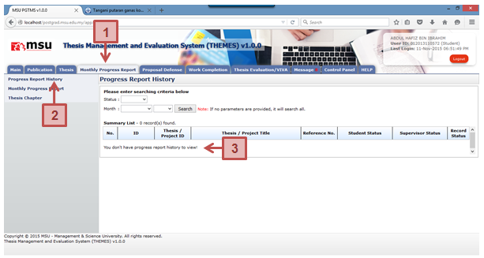

This feature will allow the user to view the history progress of the monthly report starting from its submission until approval stage.

Figure 32: Progress Report History
Prerequisite
At least one monthly progress report has been submitted by the student.
Steps
- Click on the Monthly Progress Report at the Top Panel.
- Click on the Monthly Progress Report at the Left Panel
- By default the system will show no history records on the Working Area section.
- You can list the record by providing the search criteria or just click the Search button.
- The search result will be displayed accordingly.
- Click on the Thesis ID link if to view the thesis detail.
- Click on the Reference No link if to view the monthly progress report detail.
Next Action
None
Warning
None
Note
None
Created with the Personal Edition of HelpNDoc: Generate EPub eBooks with ease